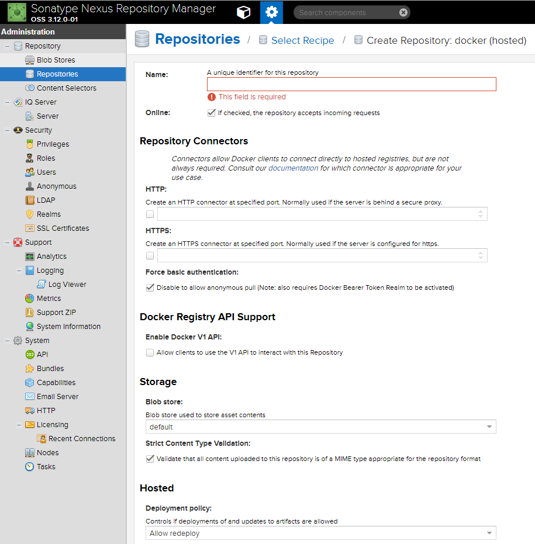
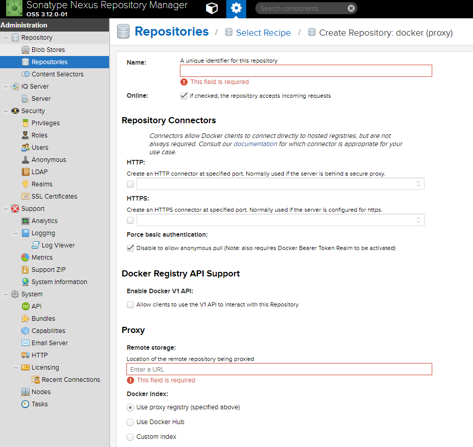
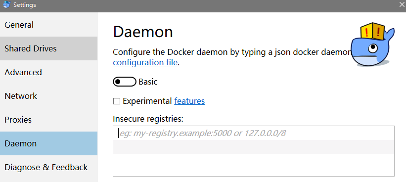

从Nexus3开始支持了存储Docker Image，感觉可以彻底抛弃Docker Registry了^-^
Nexus添加Docker仓库
docker(hosted)
点击Create repository按钮选择docker(hosted)

需要配置的地方有
Name仓库的名称Repository ConnectorsHTTP or HTTPS给HTTP或HTTPS配置端口号，Docker会访问该端口连接Docker仓库
HostedDeployment policy和Maven库一样，可以配置发布策略，是否允许同版本覆盖发布，和只读
docker(proxy)
点击Create repository按钮选择docker(proxy)

和docker(hosted)配置类似，多了需要配置
ProxyRemote storage可以填默认的docker仓库地址
https://registry-1.docker.io也可以代理国内的docker仓库地址，Docker Index选项选择Use Docker Hub
docker(group)
组仓库的配置和Maven的组仓库类似，也是把其他仓库加进来就可以了，这里不再赘述。
Docker上的配置
如果没有添加证书使用HTTP方式连接的话，需要对把registry的地址加入白名单
docker for windows
右键系统托盘小鲸鱼图标Settings…进入设置界面

往Insecure registries里添加你的仓库地址并重启Docker生效
docker for linux
找到daemon的配置文件加入json代码
1 | sudo vim /etc/docker/daemon.json |
1 | "insecure-registries": ["你的仓库地址"] |
重启Docker
ubuntu下执行
1 | service docker restart |
centos7下执行
1 | systemctl restart docker |
使用Docker仓库
登录
在上传和下载镜像之前需要先登录docker仓库账户
1 | docker login -u admin -p admin123 <your ip>:<your port> |
下载镜像
1 | docker pull <your ip>:<your port>/some-image:latest |
上传镜像
如果你想要上传的镜像，名称前缀不是仓库名的话可以用docker tag 打一个新标签
1 | docker tag some-image:latest <your ip>:<your port>/some-image:latest |